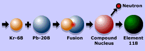

SUPERHEAVY ELEMENTS
DISCOVERED
THE DISCOVERY OF ELEMENT 115 PAVES THE WAY TO UNDERSTANDING GRAVITIC CONTROL
Element 115, the key to understanding how the ultra-secret "Black World" has created aircraft capable of manipulating gravity and space/time, has been identified, and the recent discovery of element 118, which decayed into element 114, further helps identify the possibilities.
The most important attribute of this heavier, stable element is that the gravity A wave is so abundant that it actually extends past the perimeter of the atom. These heavier, stable elements literally have their own gravity A field around them, in addition to the gravity B field that is native to all matter.
The Key To Gravity-Control Systems
No naturally occurring atoms on earth have enough protons and neutrons for the cumulative gravity A wave to extend past the perimeter of the atom so you can access it. Now even though the distance that the gravity A wave extends past the perimeter of the atom is infinitesimal, it is accessible and it has amplitude, wave length, and frequency, just like any other wave in the electromagnetic spectrum. Once you can access the gravity A wave, you can amplify it just like we amplify other electromagnetic waves.
And in like manner, the gravity A wave is amplified and then focused on the desired destination to cause the space/time distortion required for practical space travel.
This amplified gravity A wave is so powerful that the only naturally occurring source of gravity that could cause space/time to distort this much would be a black hole.
We're amplifying a wave that barely extends past the perimeter of an atom until it's large enough to distort vast amounts of space/time.
Transmutation
We synthesize heavier, unstable elements by using more stable elements as targets in a particle accelerator. We then bombard the target element with various atomic and sub-atomic particles. By doing this, we actually force neutrons into the nucleus of the atom and in some cases merge two dissimilar nuclei together. At this point, transmutation occurs, making the target element a different, heavier element.
As an example, in the early 80's, the lab for heavy ion research in Darmshtot, Germany synthesized some element 109 by bombarding Bismuth 203 with Iron 59. And to show you how difficult it is to do this, they had to bombard the target element for a week to synthesize 1 atom of element 109. And on that subject, this same lab has projected that in the future they should be able to bombard Curium 248 with with Calcium 48 to yield element 116 which will then decay through a series of nuclides which are unknown to them, but are well known to the scientists at S4 located within the complex of the Groom Lake "Area 51" installation.
The length of time which an element exists before it decays determines its stability. Atoms of some elements decay faster than atoms of other elements, so the faster an element decays, the more unstable that element is considered to be. When an atom decays, it releases or radiates sub-atomic particles and energy, which is the radiation that a Geiger counter detects.
Alien Craft
The reactor found in the alien craft at S4, as widely mentioned by physicist Robert Lazar is primarily based on a superheavy element with an atomic number of 115. Element 115 will be designated as "Ununpentium" according to IUPAC guidelines. Its periodic designation and electron configuration appear in the diagram at the top of the page.
| GENERAL PROPERTIES | |||
|---|---|---|---|
| Name: | Ununpentium | Symbol: | Uup |
| Atomic Number: | 115 | Atomic Weight: | UNKNOWN |
| Density @ 293K: | 31.5g/cm³ | Atomic Volume: | 13.45cm³/mol |
| Group: | Superheavy Elements | Discovered: | 1989 |
| STATES | |||
| State: | Solid | ||
| Melting Point: | 1740°C | Boiling Point: | 3530°C |
| Heat of Fusion: | UNKNOWN kJ/mol | Heat of Vaporisation: | UNKNOWN kJ/mol |
| ENERGIES | |||
| 1st Ionization Energy: | 531 kJ/mol | Electronegativity: | UNKNOWN |
| 2nd Ionization Energy: | 1756 kJ/mol | Electron Affinity: | UNKNOWN kJ/mol |
| 3rd Ionization Energy: | 2653 kJ/mol | Specific Heat: | UNKNOWN J/gK |
| Heat Atomization: | kJ/mol atoms | ||
| APPEARANCE AND CHARACTERISTICS | |||
| Structure: | FCC Face-centered cubic | Color: | Reddish-orange |
| Uses: | Reactor Fuel | Toxicity: | UNKNOWN |
| Hardness: | UNKNOWN mohs | Characteristics: | Stable |
| CONDUCTIVITY | |||
| Thermal Conductivity: | 6.1 J/m-sec° | Electrical Conductivity: | 7.09 1/mohm-cm |
| Polarizability: | 20.5 A³ | ||
Wednesday, June 9, 1999 Published at 10:52 GMT 11:52 UK
Sci/Tech
New superheavy elements created

The collision of lead and krypton leads to the new elements.
BBC News Online Science Editor Dr David Whitehouse
Two new "superheavy" elements have been made by bombarding lead atoms with energy-packed krypton atoms at the rate of two trillion per second.
After 11 days, the scientists working at the Lawrence Berkeley National Laboratory, US, had produced just three atoms of element 118. These contained 118 protons and 175 neutrons each in their nucleii.
The new elements decayed almost instantly to element 116, which itself was short-lived. But, for that brief moment, they were the only three atoms of these elements ever to have existed on Earth.
Ken Gregorich, the nuclear chemist who led the discovery team, said: "Our unexpected success in producing these superheavy elements opens up a whole world of possibilities using similar reactions: new elements and isotopes."
US Secretary of Energy, Bill Richardson, commented: "This stunning discovery opens the door to further insights into the structure of the atomic nucleus."
Unstable combination
Atoms consist of a central nucleus surrounded by a cloud of electrons. The nucleus consists of protons and neutrons.
But not all combinations of neutrons and protons are stable. In nature, no element heavier than uranium, with 92 protons and 146 neutrons, can normally be found.
Scientists can make heavier ones by colliding two large nuclei together and hoping that they will form a new, heavier nucleus for a short time.
One of the most significant aspects of the new elements is that their decay sequence is consistent with theories that predict an "island of stability" for atoms containing approximately 114 protons and 184 neutrons.
"We jumped over a sea of instability onto an island of stability that theories have been predicting since the 1970s," said nuclear physicist Victor Ninov. He is the first author of a paper on the discovery submitted to Physical Review Letters journal.
Atomic structure
Synthetic elements are often short-lived, but provide scientists with valuable insights into the structure of atomic nuclei. They also offer opportunities to study the chemical properties of the elements heavier than uranium.
I-Yang Lee, scientific director of the atom smasher at Lawrence Berkeley National Laboratory, said "From the discovery of these two new superheavy elements, it is now clear that the island of stability can be reached.
"Additionally, similar reactions can be used to produce other elements and isotopes, providing a rich new region for the study of nuclear properties."
Fast work
Element 118 takes less than a thousandth of a second to decay by emitting an alpha particle. This leaves behind an isotope of element 116 which contains 116 protons and 173 neutrons.
This daughter is also radioactive, alpha-decaying to an isotope of element 114.
The chain of successive alpha decays continues until at least element 106.